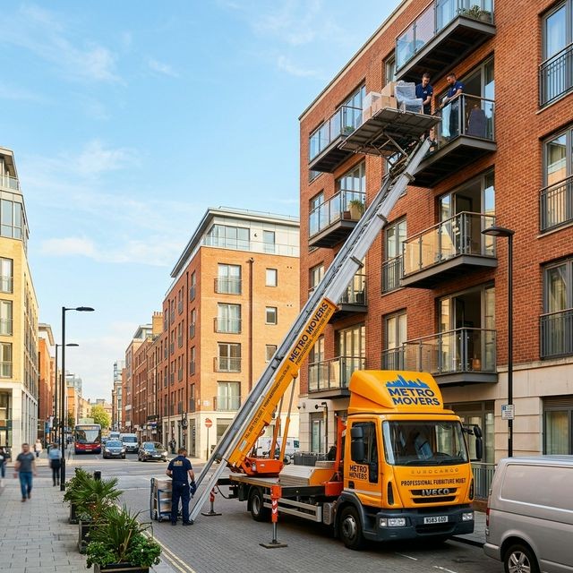
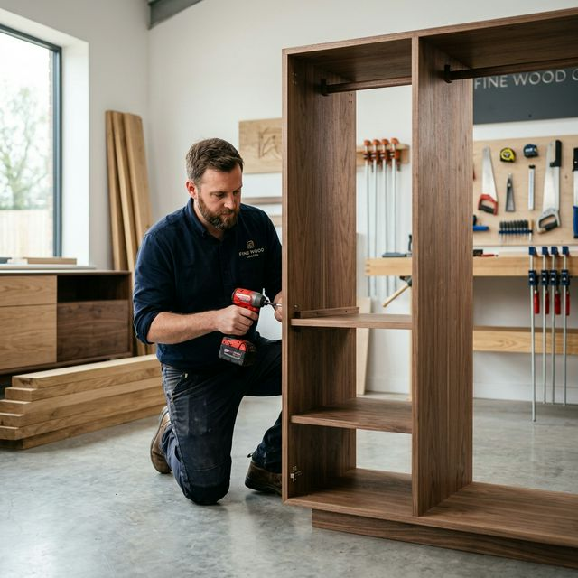

La storia di un'impresa nata dall'amore per il legno e per il lavoro ben fatto.

Primo Traslochi di Pavia è un'impresa nata nel 1990 per iniziativa di 4 falegnami con grande e lunga esperienza nella realizzazione di mobili.
L'idea fu legata alla richiesta di molti clienti che si lamentavano per i danni causati da alcuni traslocatori e sollecitavano nostri interventi di riparazione sui mobili di casa. Abbiamo quindi deciso di creare un'impresa di traslochi in grado di garantire un servizio curato nei minimi particolari, con professionalità e precisione.
In oltre 35 anni di attività, abbiamo aiutato migliaia di famiglie e aziende a traslocare nelle province di Pavia, Lodi, Cremona e Milano, sempre con la stessa dedizione e cura artigianale.
Richiedi un preventivoQuattro principi fondamentali che definiscono il nostro modo di lavorare.
Costruiamo rapporti duraturi con i nostri clienti, basati sulla trasparenza e sull'onestà in ogni fase del lavoro.
Ogni trasloco è un lavoro artigianale: nessun mobile viene trattato come un semplice pacco, ma con la cura che merita.
Non facciamo mai compromessi sulla qualità. Dal materiale da imballaggio alla cura nel trasporto: il massimo sempre.
Rispettiamo i tempi e gli accordi presi. Sappiamo che un trasloco è un momento delicato che richiede precisione.
Da piccoli traslochi di un solo mobile a trasferimenti aziendali complessi: nel corso degli anni abbiamo acquisito competenze uniche che ci permettono di affrontare qualsiasi situazione.
4 falegnami pavesi fondano Primo Traslochi con un'idea semplice: fare traslochi con la cura di chi costruisce mobili.
Il servizio si estende alle province di Lodi, Cremona e Milano. Nuove attrezzature e veicoli per rispondere alla crescente domanda.
Introduzione del servizio di noleggio furgoni e piattaforme aeree, oltre alla movimentazione di pianoforti e oggetti speciali.
Continuiamo a offrire lo stesso servizio artigianale di qualità, con l'esperienza accumulata in oltre tre decenni di lavoro.
